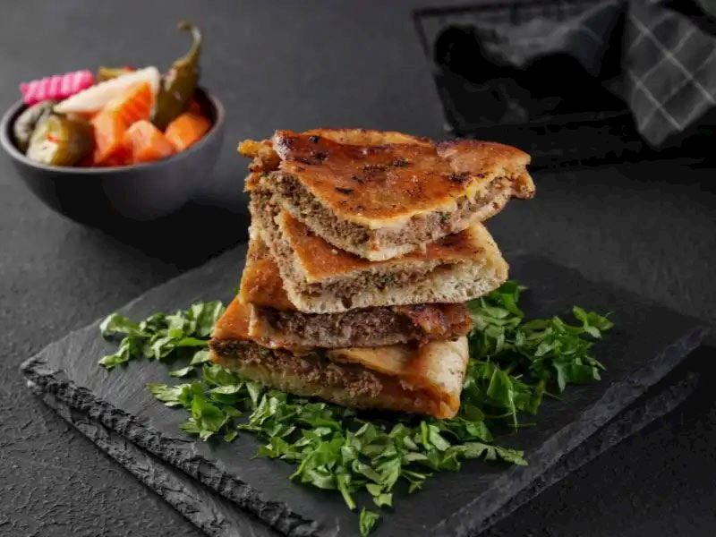

Home
Hawawshi

Description
Hawawshi is a traditional Egyptian street food, consisting of baladi flatbread or pita stuffed with a flavorful mixture of minced beef or lamb, chopped onions, peppers, parsley, garlic, and spices such as cumin, coriander, and paprika, then baked or grilled until the exterior is crispy and the filling is juicy.
Ingredients
- 500 grams ground beef not lean
- 1 medium onion peeled and finely chopped or you can grate the onions
- 2 cloves garlic peeled and minced
- 1 tomato seeds removed, finely chopped
- 1/2 green bell pepper stem and seeds discarded, finely chopped, or you can bake them in the oven
- 1 green or red chili pepper optional, stem and seeds discarded, finely chopped, or you can bake it in the oven
- 1/4 cup (5 grams) fresh parsley chopped
- 1 teaspoon salt
- 1/2 teaspoon ground allspice
- 1/2 teaspoon paprika
- 1/2 teaspoon ground coriander
- 1/2 teaspoon freshly ground black pepper
- 1/4 teaspoon ground cardamom
- 6 Aish Baladi Egyptian wheat flatbread
- Ghee or melted butter for brushing
Steps
- In a large bowl, gently mix the ground beef, onion, garlic, tomato, bell pepper, green or red chili pepper or if you baked them mash them and then add them, parsley, salt, allspice, paprika, coriander, black pepper, cardamom just until combined.
- Cover the bowl and refrigerate for at least an hour.
- Preheat oven to 400˚ (200˚C).
- Carefully cut a small slit on one side of the bread or pita about 2 inches (5 centimeters) wide. Gently add about 1/4-1/3 cup of the meat mixture and press across the top to push the meat into an even layer. Repeat with remaining bread and meat.
- Another option is to cut each piece of bread in half and fill each half with the meat mixture.
- Brush each side of the filled bread with ghee and arrange on a rimmed baking sheet.
- Bake in preheated oven until the meat is cooked through and the bread is golden, about 20-25 minutes.
- Cut the bread in halves or quarters and serve with tahini sauce, salad, fries, and/or pickled vegetables.